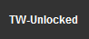

TW-Unlocked
This is a userscript that should be loaded via GreaseMonkey or TamperMonkey.
You can get the script here if you use GreaseMonkey or here if you use TamperMonkey.
Please note the GreaseMonkey and TamperMonker userscripts are the same but do not work with eachother. (so you cant use GreaseMonkey version on TamperMonkey and visce versa)
Usage
When you add it go to turbowarp and you should see a button that says "TW-Unlocked".
